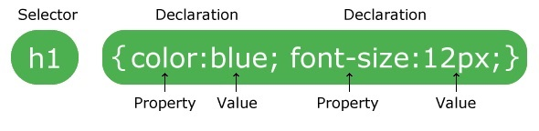

el diseño y las variaciones en la visualización para diferentes dispositivos
y tamaños de pantalla.
Ejemplo

CSS se utiliza para definir estilos para sus páginas web, incluido el diseño,
el diseño y las variaciones en la visualización para diferentes dispositivos
y tamaños de pantalla.
Ejemplo
Un conjunto de reglas CSS consta de un selector y un bloque de declaración:

El selector apunta al elemento HTML al que desea aplicar estilo.
El bloque de declaración contiene una o más declaraciones separadas por punto y coma.
Cada declaración incluye un nombre de propiedad CSS y un valor, separados por dos puntos.
Varias declaraciones de CSS se separan con punto y coma y los bloques de declaración están
rodeados por llaves.

Los selectores CSS se utilizan para "buscar" (o seleccionar) los elementos HTML que desea aplicar estilo.
Podemos dividir los selectores de CSS en cinco categorías:
Aquí, todos los elementos (p) de la página estarán alineados al centro, con un color de texto rojo:

El selector de id utiliza el atributo id de un elemento HTML para seleccionar un elemento específico.
La identificación de un elemento es única dentro de una página, por lo que el selector de identificación
se utiliza para seleccionar un elemento único.
Para seleccionar un elemento con una identificación específica, escriba un carácter de almohadilla (#),
seguido de la identificación del elemento.


El selector universal (*) selecciona todos los elementos HTML de la página.

El selector de agrupación selecciona todos los elementos HTML con las mismas definiciones de estilo.
Mire el siguiente código CSS (los elementos h1, h2 yp tienen las mismas definiciones de estilo):

Será mejor agrupar los selectores para minimizar el código.
Para agrupar selectores, separe cada selector con una coma.